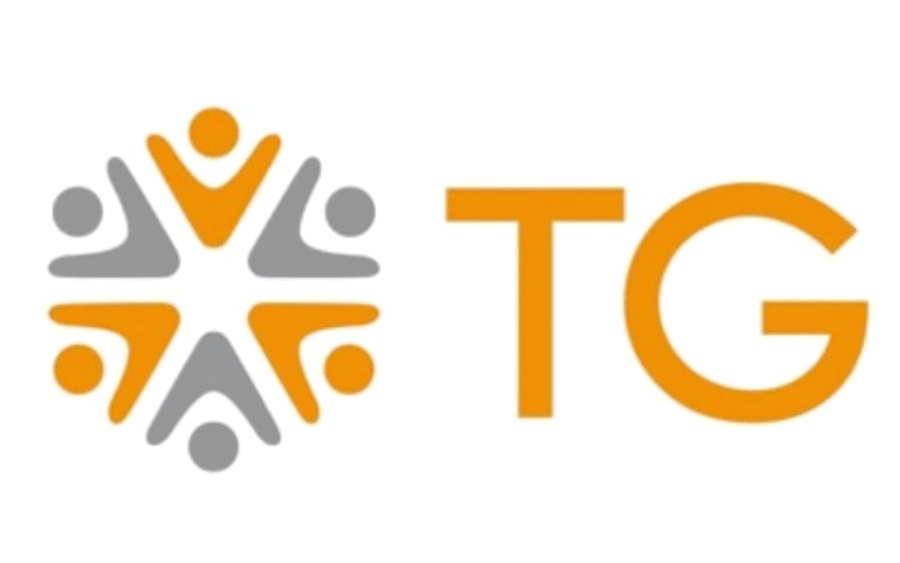
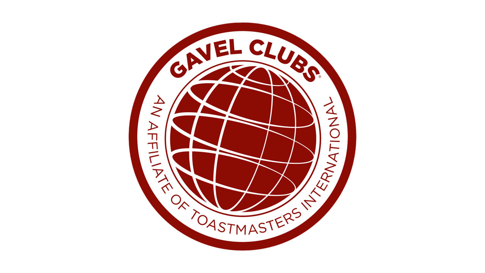
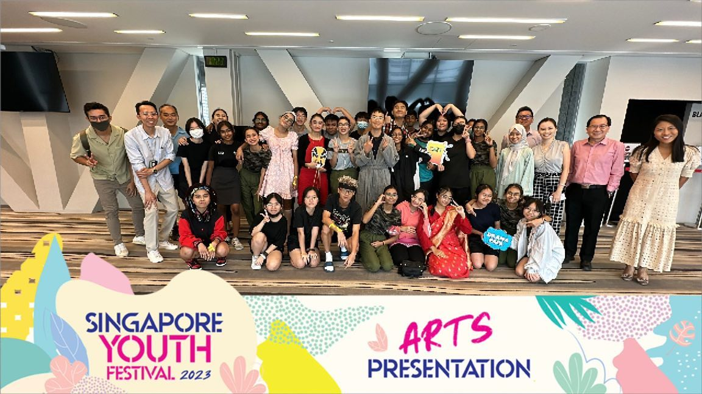

I’ve been captivated by artificial intelligence since I was 12. What started as a childhood fascination with AI documentaries grew into a lifelong passion for understanding and building intelligent systems. Today, I’m pursuing AI Applications to turn that curiosity into impact. I envision a future where humans and AI work hand-in-hand to create a smarter, more connected world—and I aspire to play a part in shaping the path toward true AGI.

Company: TG Singapore
Role: Tech Intern - Finance
Responsibilities:
A machine learning model that uses binary classification to predict the presence of heart disease.
A Natural Language Processing (NLP) project that applies sentiment analysis to classify online movie reviews as positive or negative.
A CNN-based model for Traffic Sign Recognition (TSR) designed for efficient and accurate image classification.


Email: verymilly3926@gmail.com
Phone: +65 8885 0137
LinkedIn: www.linkedin.com/in/faiqahred